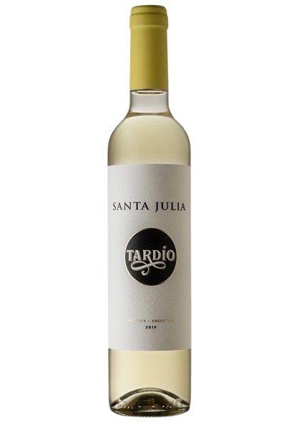
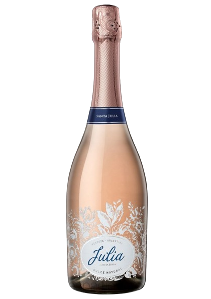

Santa Julia Winery Experience
During the Santa Julia experience, this tasting will take us on a journey to a winery renowned for its selection of sweet wines, crafted from the finest grapes in the country.
What Can You Expect From This Tasting?
This tasting will feature five wines from the winery, including:


NATURAL SWEET CHENIN
Santa Julia Chenin Dulce Natural is a wine made from Chenin Blanc grapes. It’s a soft and delicate wine with a light greenish-yellow hue, offering aromas of white peach, apricot, fresh herbs, and hints of citrus like lemon and grapefruit.

TARDÍO
This wine is characterized by fresh aromas, a rich texture, and an excellent balance between sweetness and acidity, making it the first of its kind in Argentina.
TOMATES VERDES
Tomates Verdes is a light and fresh wine, a Torrontés that preserves the typical characteristics of the variety. Origin: our vineyard in Maipú.
LA OVEJA
Santa Julia's natural wines involve minimal human intervention from the vineyard to production. No sulfites are added, and natural yeasts are used. The wine is bottled without filtration.

JULIA DULCE NATURAL
Julia is a naturally sweet sparkling wine, soft and refreshing. It offers notes of red fruits, orange, pineapple, and mango. On the palate, it’s sweet and refreshing with a creamy bubble.
Event Location
The tasting will take place at Antonia Vinos, located at Valparaíso Avenue, number 4250, store 3.